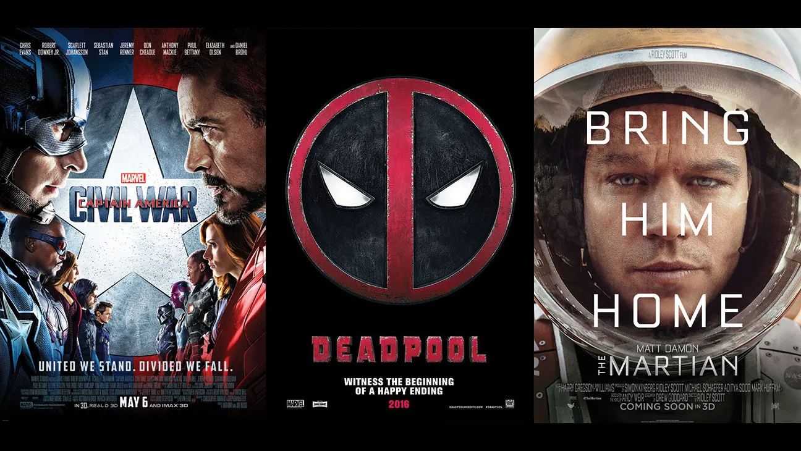

THE LORAX

GENRE Fantasy/Animation RUNTIME 2h 14mins RATING
SYNOPSISTwelve-year-old Ted (Zac Efron) lives in a place virtually devoid of nature; no flowers or trees grow in the town of Thneedville. Ted would very much like to win the heart of Audrey (Taylor Swift), the girl of his dreams, but to do this, he must find that which she most desires: a Truffula tree. To get it, Ted delves into the story of the Lorax (Danny DeVito), once the gruff guardian of the forest, and the Once-ler (Ed Helms), who let greed overtake his respect for nature.
DEADPOOL
GENRE Comedy/Action RUNTIME 1h 48mins RATING
SYNOPSISWade Wilson (Ryan Reynolds) is a former Special Forces operative who now works as a mercenary. His world comes crashing down when evil scientist Ajax (Ed Skrein) tortures, disfigures and transforms him into Deadpool. The rogue experiment leaves Deadpool with accelerated healing powers and a twisted sense of humor. With help from mutant allies Colossus and Negasonic Teenage Warhead (Brianna Hildebrand), Deadpool uses his new skills to hunt down the man who nearly destroyed his life.
THE DARK KNIGHT RISES

GENRE Thriller/Crime Fiction RUNTIME 2h 45mins RATING
SYNOPSISIt has been eight years since Batman (Christian Bale), in collusion with Commissioner Gordon (Gary Oldman), vanished into the night. Assuming responsibility for the death of Harvey Dent, Batman sacrificed everything for what he and Gordon hoped would be the greater good. However, the arrival of a cunning cat burglar (Anne Hathaway) and a merciless terrorist named Bane (Tom Hardy) force Batman out of exile and into a battle he may not be able to win.